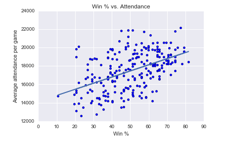

Cost of Poor Free Throw Shooting

Free?
The Cost of Poor Free Throw Shooting With 19.4 seconds left in Game 6 of the 2013 NBA Finals, the San Antonio Spurs were up 94-92. Kawhi Leonard stepped up to the line for two free throws. He missed the first and made the second. Seconds later... Ray Allen drilled a 3 that sent the game to overtime. We know how that story ends. What if Kawhi Leonard made both free throws? What is the value of that to the Spurs Franchise? That is difficult to assess, but we can do our best to estimate: The value of the Miami Heat went from 457 million to 625 million in 2013. The San Antonio Spurs went from 418 million to 527 million under the same period.** Free throws can be the difference of which team wins the NBA finals, which team makes the NBA playoffs. So what is the cost of poor free throw shooting? Ceteris paribus, better shooting leads to more wins. How many more wins? I collected the regular season data for the games from the 2005-2006 season up until the 2015-2016 season. I increased each individual team's free throw output by 10%, while holding all other team's shooting constant. If the team had originally lost the game prior to the adjustment and now wins the game, I mark that as a win lost to poor free throw shooting. Over eleven seasons, the average games lost to poor free throw shooting was roughly 3.4 games per team per season.* What does that mean for the teams in the 2015-2016 season? The Utah Jazz would have won five more games, putting them from outside of the playoffs to the 5th seed in the West. The Washington Wizards would have won four more games, placing them 7th in the East. The price of poor free throw shooting for these two teams was the opportunity to compete for an NBA title. If a team made 18/27 free throws, I increased their free throws to 20.7/27. I rounded all values to the nearest integer value (21). If the resulting score is tied with another team, I consider the ones I rounded up to have lost overtime and the ones that rounded down to have won overtime. *src:Forbes
